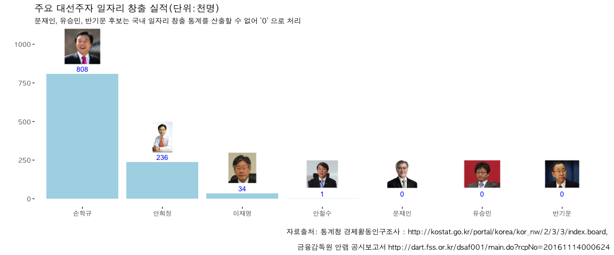

빅 데이터로 짚어본 주요 대선주자의 일자리 창출 실적
1. 주요 대선 주자 일자리
1.1. 손학규 1
- 경기도 지사(2002 - 2006): 2002년 6월13일 민선3기 경기도 지사로 당선
- 재임기간: 2002년 7월 1일 ~ 2006년 6월 30일
- 일자리 창출 산정 기간(4년): 2003년, 2004년, 2005년, 2006년
1.2. 안희정 2
- 충청남도 지사(2010 - 현재): 민선 36대, 37대 충청남도 지사로 당선
- 재임기간: 2010년 7월 1일 ~ 2014년 6월 30일(36대), 2014년 7월 1일 ~ 현재 (37대)
- 일자리 창출 산정 기간(6년): 2011년, 2012년, 2013년, 2014년, 2015년, 2016년
1.3. 이재명 3
- 성남 시장(2010 - 현재): 제19대 , 20대 성남시장으로 당선
- 재임기간: 2010년 7월 1일 ~ 2014년 6월 30일(19대), 2014년 7월 1일 ~ 현재 (20대)
- 일자리 창출 산정 기간(6년): 2011년, 2012년, 2013년, 2014년, 2015년, 2016년
1.4. 문재인
문재인 전 민주당 대표는 일자리 창출 통계 정보를 추출할 위치에 있지 않아 대상에서 제외. 다만, 최대 131만개 일자리를 창출하겠다는 공약을 발표하였다. 구체적인 일자리 창출 공약으로 현재 전체 일자리 중 공공부문이 차지하는 비율이 경제협력개발기구(OECD) 평균(21.3%)의 3분의 1 수준인 7.6% 밖에 안 되어, 3%포인트만 올려도 81만개 일자리 창출이 가능하고, 노동법에 규정된 연장노동을 포함한 노동시간을 주 52시간 내로 법규 준수를 통해 50만개 일자리를 창출하겠다고 밝혔다. 4
1.5. 안철수
안철수 전 국민의당 대표는 안랩을 설립한 벤쳐기업인으로 알려져 있고, 금융감독원 안랩 공시보고서(2016년 09월)에 따르면 기간제 근로자 포함하여 총 961명 근로하고 있는 것으로 파악된다.
1.6. 유승민, 반기문
유승민, 반기문 대선 후보는 국내 일자리 창출관련 통계를 산출할 수 있는 위치에 있지 않아 문재인 후보와 마찬가지로 0으로 처리.
2. 일자리 데이터
통계청에서 조사하고 있는 “고용/노동” 웹사이트를 방문하면 경제활동인구조사, 지역별고용조사를 통해 대선주자들이 지사 및 시장을 역임하면서 창출한 일자리 통계를 확인할 수 있다.
2.1. 손학규
국가통계포털(KOSIS), 지역통계, 행정구역(시도)별 경제활동인구를 통해 손학규 국민주권개혁회의 의장 경기도 지사 재심기간 일자리 창출 내역을 추정할 수 있다.
기준년도 2002년 경제활동인구가 5,422천명, 2006년 경제활동인구 중 취업자수 5,229천명으로 경기지사 재임기간 중 744천명 일자리가 증가된 것으로 추정된다.
| 연도 | 시도 | 경제활동인구 | 비경제활동인구 | 취업자수 |
|---|---|---|---|---|
| 2002 | 경기도 | 4,614 | 2,791 | 4,485 |
| 2003 | 경기도 | 4,784 | 2,962 | 4,622 |
| 2004 | 경기도 | 5,060 | 3,016 | 4,874 |
| 2005 | 경기도 | 5,250 | 3,134 | 5,045 |
| 2006 | 경기도 | 5,422 | 3,246 | 5,229 |
2.2. 안희정
통계청에서 조사하고 있는 “고용/노동” 웹사이트에서 엑셀 파일을 다운로드 받아 안희정 충남지사 재임기간 동안 15세 이상 인구 중 경제활동인구를 기준으로 증가한 경제활동인구를 대상으로 일자리 창출규모를 추정한다.
2010년 경제활동인구 중 취업자수가 974천명, 2015년 경제활동인구 1,170 천명으로 안희정 충남지사 재임기간 중 196천명 으로 추정된다.
| 연도 | 시도 | 경제활동인구 | 비경제활동인구 | 취업자수 |
|---|---|---|---|---|
| 2010 | 충 남 | 999 | 614 | 974 |
| 2011 | 충 남 | 1,022 | 621 | 1,001 |
| 2012 | 충 남 | 1,077 | 640 | 1,056 |
| 2013 | 충 남 | 1,165 | 647 | 1,137 |
| 2014 | 충 남 | 1,191 | 664 | 1,158 |
| 2015 | 충 남 | 1,204 | 744 | 1,170 |
library(tidyverse)
library(readxl)
library(lubridate)
# 1. 데이터 가져오기 ------------------------------------------------
## 안희정
kjobs_11 <- read_excel("data/ssec1112.xls", sheet="12.시도별", skip=11, col_names = FALSE)
kjobs_11 <- kjobs_11 %>% dplyr::select(X1, X3, X6) %>% dplyr::filter(X1 == "충 남") %>%
rename(sido=X1, jobs=X3, nojobs=X6) %>% mutate(year=ymd("2011-01-01"))
kjobs_12 <- read_excel("data/ssec1212.xls", sheet="12.시도별", skip=11, col_names = FALSE)
kjobs_12 <- kjobs_12 %>% dplyr::select(X1, X3, X6) %>% dplyr::filter(X1 == "충 남") %>%
rename(sido=X1, jobs=X3, nojobs=X6) %>% mutate(year=ymd("2012-01-01"))
kjobs_13 <- read_excel("data/ssec1312.xls", sheet="13.시도별", skip=11, col_names = FALSE)
kjobs_13 <- kjobs_13 %>% dplyr::select(X1, X3, X6) %>% dplyr::filter(X1 == "충 남") %>%
rename(sido=X1, jobs=X3, nojobs=X6) %>% mutate(year=ymd("2013-01-01"))
kjobs_14 <- read_excel("data/ssec1412.xls", sheet="13.시도별", skip=11, col_names = FALSE)
kjobs_14 <- kjobs_14 %>% dplyr::select(X1, X3, X6) %>% dplyr::filter(X1 == "충 남") %>%
rename(sido=X1, jobs=X3, nojobs=X6) %>% mutate(year=ymd("2014-01-01"))
kjobs_15 <- read_excel("data/ssec1512.xls", sheet="13.시도별", skip=11, col_names = FALSE)
kjobs_15 <- kjobs_15 %>% dplyr::select(X1, X3, X6) %>% dplyr::filter(X1 == "충 남") %>%
rename(sido=X1, jobs=X3, nojobs=X6) %>% mutate(year=ymd("2015-01-01"))
kjobs <- kjobs_11 %>% bind_rows(kjobs_12) %>% bind_rows(kjobs_13) %>% bind_rows(kjobs_14) %>% bind_rows(kjobs_15)kjobs# A tibble: 5 × 4
sido jobs nojobs year
<chr> <dbl> <dbl> <date>
1 충 남 985 676 2011-01-01
2 충 남 1054 705 2012-01-01
3 충 남 1137 702 2013-01-01
4 충 남 1131 741 2014-01-01
5 충 남 1204 744 2015-01-01
1.3. 이재명
시군구는 전국단위 혹은 광역시도 단위보다 적은 단위로 자료를 구하기 쉽지 않아 수작업으로 아래한글, PDF 파일을 통해 성남시 데이터만 추려 이재명 시장 재임기간 일자리 창출 내역을 파악하면 다음과 같다.
15세 이상 인구 중 경제활동인구를 기준으로 이재명 성남시장 재임기간 중 증가한 경제활동인구를 대상으로 일자리 창출규모를 추정한다.
기준년도 2010년 경제활동인구가 473천명, 2015년 경제활동인구 507천명으로 이재명 성남시장 재임기간 중 34천명 으로 추정된다.
| 년도 | 시군구 | 경제활동인구 | 비경제활동인구 | 취업자수 |
|---|---|---|---|---|
| 2010 | 성남시 | 465 | 372 | 452 |
| 2011 | 성남시 | 499 | 348 | 485 |
| 2012 | 성남시 | 507 | 316 | 491 |
| 2013 | 성남시 | 497 | 327 | 480 |
| 2014 | 성남시 | 503 | 323 | 483 |
| 2015 | 성남시 | 507 | 321 | 490 |
2. 주요 대선주자 일자리 창출실적
앞에서 산출한 일자리 창출실적을 바탕으로 주요 대선주자 일자리 창출 실적을 시각화 해보자. png 팩키지 raterGrob 함수를 활용하여 이미지 객체로 저장하고 나서, ggplot의 annotation_custom() 함수를 활용하여 사진을 그래프에 함께 겹쳐 넣는다.
library(png)
library(grid)
library(ggplot2)
sohn <- readPNG("fig/sohn.png")
sohn_g <- rasterGrob(sohn, interpolate=TRUE)
ban <- readPNG("fig/ban.png")
ban_g <- rasterGrob(ban, interpolate=TRUE)
hj <- readPNG("fig/hj.png")
hj_g <- rasterGrob(hj, interpolate=TRUE)
lee <- readPNG("fig/lee.png")
lee_g <- rasterGrob(lee, interpolate=TRUE)
ahn <- readPNG("fig/ahn.png")
ahn_g <- rasterGrob(ahn, interpolate=TRUE)
moon <- readPNG("fig/moon.png")
moon_g <- rasterGrob(moon, interpolate=TRUE)
yoo <- readPNG("fig/yoo.png")
yoo_g <- rasterGrob(yoo, interpolate=TRUE)
jobs_df <- data.frame(candidate=c("손학규", "안희정", "이재명", "안철수", "문재인", "유승민", "반기문"),
jobs_created = c(744, 196, 34, 1, 0, 0, 0))
jobs_df <- jobs_df %>% mutate(candidate = factor(candidate, levels=c("손학규", "안희정", "이재명", "안철수", "문재인", "유승민", "반기문")))
ggplot(jobs_df, aes(x=candidate, y=jobs_created)) +
geom_bar(stat = "identity", fill="lightblue") + theme_tufte(base_family='AppleGothic') +
scale_y_continuous(limits=c(0,1050)) +
geom_text(aes(label = jobs_created), size = 5.5, hjust = 0.5, vjust = -0.5, color="blue") +
annotation_custom(sohn_g, xmin=1-0.7, xmax=1+0.7, ymin=870) +
annotation_custom(hj_g, xmin=2-0.7, xmax=2+0.7, ymin=300, ymax=500) +
annotation_custom(lee_g, xmin=3-0.7, xmax=3+0.7, ymin=100, ymax=300) +
annotation_custom(ahn_g, xmin=4-0.7, xmax=4+0.7, ymin=70, ymax=250) +
annotation_custom(moon_g, xmin=5-0.7, xmax=5+0.7, ymin=70, ymax=250) +
annotation_custom(yoo_g, xmin=6-0.7, xmax=6+0.7, ymin=70, ymax=250) +
annotation_custom(ban_g, xmin=7-0.7, xmax=7+0.7, ymin=70, ymax=250) +
labs(x="",y="",title="주요 대선주자 일자리 창출 실적(단위:천명)",
caption="자료출처: 통계청 경제활동인구조사 : http://kostat.go.kr/portal/korea/kor_nw/2/3/3/index.board, \n
금융감독원 안랩 공시보고서 http://dart.fss.or.kr/dsaf001/main.do?rcpNo=20161114000624",
subtitle="문재인, 유승민, 반기문 후보는 국내 일자리 창출 통계를 산출할 수 없어 `0` 으로 처리")